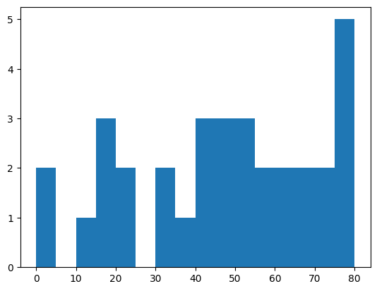
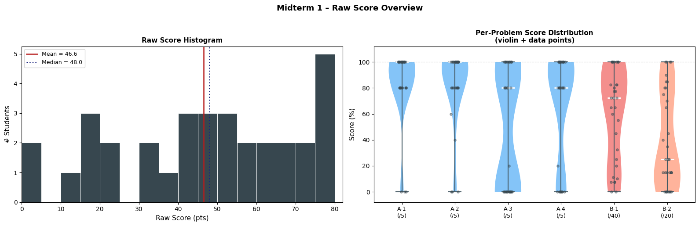
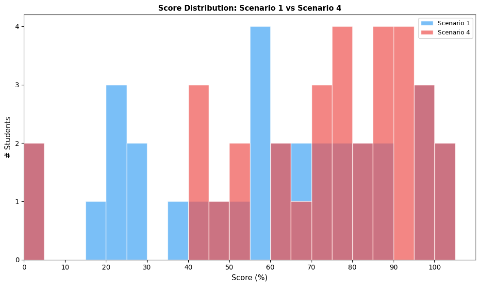
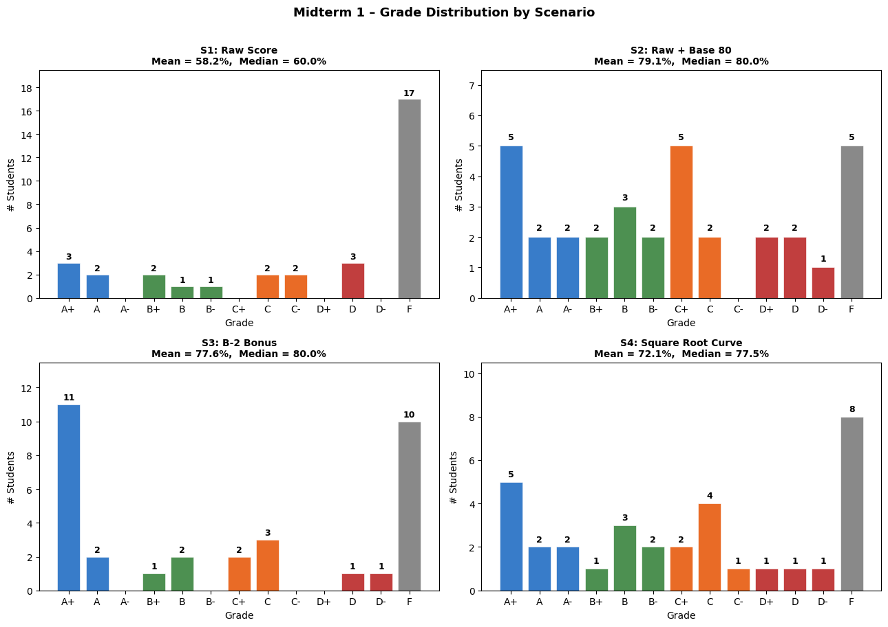
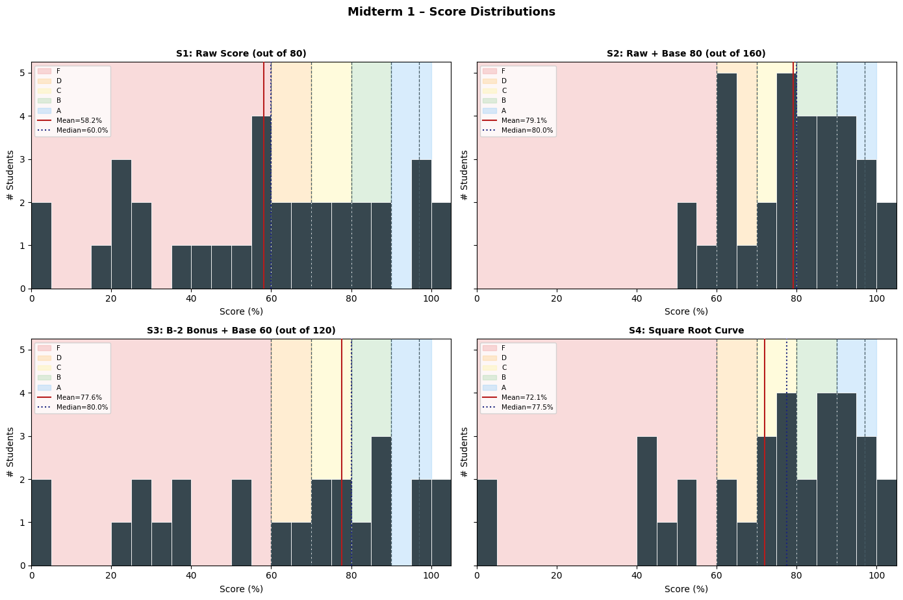

Midterm 1 Grade Analysis#
Problem structure:
A-1: 5 pts, A-2: 5 pts, A-3: 5 pts, A-4: 5 pts
B-1: 40 pts, B-2: 20 pts
Total: 80 pts
Three Scenarios:
Raw score (out of 80)
Raw score + base score 80 → percentage = (raw + 80) / 160 × 100
Exclude B-2 from exam, add base score 60, use B-2 as bonus
Grade Scale:
Grade |
Threshold |
|---|---|
A+ |
> 97% |
A |
> 93% |
A- |
> 90% |
B+ |
> 87% |
B |
> 83% |
B- |
> 80% |
C+ |
> 77% |
C |
> 73% |
C- |
> 70% |
D+ |
> 67% |
D |
> 63% |
D- |
> 60% |
F |
≤ 60% |
import pandas as pd
import numpy as np
import matplotlib.pyplot as plt
import matplotlib.ticker as mticker
# ── Load data ──────────────────────────────────────────────────────────────
df_raw = pd.read_excel('/Users/hoon/Downloads/Midterm1-score.xlsx', sheet_name='Total')
df_raw = df_raw.rename(columns={
'Score': 'raw',
'2: A-1 (5.0 pts)': 'A1',
'3: A-2 (5.0 pts)': 'A2',
'4: A-3 (5.0 pts)': 'A3',
'5: A-4 (5.0 pts)': 'A4',
'6: B-1 (40.0 pts)': 'B1',
'7: B-2 (20.0 pts)': 'B2',
})
# Keep only score columns; use entry number as index (no names)
# Exclude entries with a total raw score of 0 (absent / no submission)
data = df_raw[['raw','A1','A2','A3','A4','B1','B2']].copy()
# data = data[data['raw'] > 0]
data.index = pd.RangeIndex(1, len(data)+1)
data.index.name = 'Entry'
MAX_SCORE = 80
print(f'Students: {len(data)}')
print('\nRaw score summary (out of 80):')
data['raw'].describe().round(2)
Students: 33
Raw score summary (out of 80):
count 33.00
mean 46.56
std 23.48
min 0.00
25% 31.00
50% 48.00
75% 65.00
max 80.00
Name: raw, dtype: float64
data
| raw | A1 | A2 | A3 | A4 | B1 | B2 | |
|---|---|---|---|---|---|---|---|
| Entry | |||||||
| 1 | 80.0 | 5 | 5 | 5 | 5 | 40.0 | 20 |
| 2 | 80.0 | 5 | 5 | 5 | 5 | 40.0 | 20 |
| 3 | 47.0 | 5 | 5 | 5 | 0 | 29.0 | 3 |
| 4 | 31.0 | 4 | 3 | 0 | 0 | 8.0 | 16 |
| 5 | 37.0 | 4 | 4 | 0 | 0 | 26.0 | 3 |
| 6 | 60.0 | 5 | 5 | 5 | 5 | 40.0 | 0 |
| 7 | 0.0 | 0 | 0 | 0 | 0 | 0.0 | 0 |
| 8 | 51.0 | 5 | 5 | 0 | 0 | 32.0 | 9 |
| 9 | 67.0 | 5 | 5 | 1 | 5 | 33.0 | 18 |
| 10 | 77.0 | 5 | 5 | 5 | 5 | 40.0 | 17 |
| 11 | 76.0 | 5 | 5 | 5 | 4 | 40.0 | 17 |
| 12 | 52.0 | 4 | 4 | 5 | 5 | 26.0 | 8 |
| 13 | 44.0 | 4 | 2 | 0 | 0 | 31.0 | 7 |
| 14 | 53.0 | 5 | 5 | 5 | 5 | 33.0 | 0 |
| 15 | 44.0 | 5 | 5 | 0 | 5 | 24.0 | 5 |
| 16 | 58.0 | 5 | 5 | 5 | 5 | 33.0 | 5 |
| 17 | 14.0 | 5 | 5 | 0 | 1 | 3.0 | 0 |
| 18 | 18.0 | 0 | 5 | 5 | 5 | 3.0 | 0 |
| 19 | 58.0 | 4 | 4 | 4 | 4 | 22.0 | 20 |
| 20 | 40.0 | 4 | 0 | 0 | 4 | 29.0 | 3 |
| 21 | 71.0 | 5 | 5 | 0 | 5 | 40.0 | 16 |
| 22 | 32.0 | 4 | 4 | 4 | 4 | 13.0 | 3 |
| 23 | 48.0 | 4 | 4 | 4 | 4 | 29.0 | 3 |
| 24 | 22.0 | 4 | 4 | 0 | 4 | 10.0 | 0 |
| 25 | 0.0 | 0 | 0 | 0 | 0 | 0.0 | 0 |
| 26 | 79.0 | 5 | 5 | 4 | 5 | 40.0 | 20 |
| 27 | 65.0 | 5 | 5 | 5 | 5 | 40.0 | 5 |
| 28 | 16.0 | 4 | 4 | 0 | 4 | 4.0 | 0 |
| 29 | 22.5 | 5 | 5 | 0 | 5 | 4.5 | 3 |
| 30 | 71.0 | 4 | 4 | 4 | 4 | 40.0 | 15 |
| 31 | 61.0 | 4 | 4 | 4 | 4 | 31.0 | 14 |
| 32 | 46.0 | 5 | 5 | 0 | 5 | 18.0 | 13 |
| 33 | 16.0 | 5 | 5 | 0 | 0 | 3.0 | 3 |
scores = np.array(data['raw'])
print(f'Number of students: {len(scores)}')
print(f'Mean score: {scores.mean():.2f}')
print(f'Median score: {np.median(scores):.2f}')
print(f'Standard deviation: {scores.std(ddof=1):.2f}')
# print(f"Minimum score: {scores.min()}")
# print(f"Maximum score: {scores.max()}")
# print(f"25th percentile: {np.percentile(scores, 25):.2f}")
# print(f"75th percentile: {np.percentile(scores, 75):.2f}")
# print(f"Number of students scoring above 70: {(scores > 70).sum()}")
Number of students: 33
Mean score: 46.56
Median score: 48.00
Standard deviation: 23.48
Raw Score Distribution#
plt.hist(scores, bins=range(0, 85, 5))
(array([2., 0., 1., 3., 2., 0., 2., 1., 3., 3., 3., 2., 2., 2., 2., 5.]),
array([ 0., 5., 10., 15., 20., 25., 30., 35., 40., 45., 50., 55., 60.,
65., 70., 75., 80.]),
<BarContainer object of 16 artists>)

#pct_data = [data[col] / mx * 100 for col, mx in zip(problem_cols, problem_max)]
plt.violinplot(scores, positions=range(len(pct_data)))
---------------------------------------------------------------------------
NameError Traceback (most recent call last)
Cell In[5], line 3
1 #pct_data = [data[col] / mx * 100 for col, mx in zip(problem_cols, problem_max)]
----> 3 plt.violinplot(scores, positions=range(len(pct_data)))
NameError: name 'pct_data' is not defined
pct_data
[Entry
1 100.0
2 100.0
3 100.0
4 80.0
5 80.0
6 100.0
7 0.0
8 100.0
9 100.0
10 100.0
11 100.0
12 80.0
13 80.0
14 100.0
15 100.0
16 100.0
17 100.0
18 0.0
19 80.0
20 80.0
21 100.0
22 80.0
23 80.0
24 80.0
25 0.0
26 100.0
27 100.0
28 80.0
29 100.0
30 80.0
31 80.0
32 100.0
33 100.0
Name: A1, dtype: float64,
Entry
1 100.0
2 100.0
3 100.0
4 60.0
5 80.0
6 100.0
7 0.0
8 100.0
9 100.0
10 100.0
11 100.0
12 80.0
13 40.0
14 100.0
15 100.0
16 100.0
17 100.0
18 100.0
19 80.0
20 0.0
21 100.0
22 80.0
23 80.0
24 80.0
25 0.0
26 100.0
27 100.0
28 80.0
29 100.0
30 80.0
31 80.0
32 100.0
33 100.0
Name: A2, dtype: float64,
Entry
1 100.0
2 100.0
3 100.0
4 0.0
5 0.0
6 100.0
7 0.0
8 0.0
9 20.0
10 100.0
11 100.0
12 100.0
13 0.0
14 100.0
15 0.0
16 100.0
17 0.0
18 100.0
19 80.0
20 0.0
21 0.0
22 80.0
23 80.0
24 0.0
25 0.0
26 80.0
27 100.0
28 0.0
29 0.0
30 80.0
31 80.0
32 0.0
33 0.0
Name: A3, dtype: float64,
Entry
1 100.0
2 100.0
3 0.0
4 0.0
5 0.0
6 100.0
7 0.0
8 0.0
9 100.0
10 100.0
11 80.0
12 100.0
13 0.0
14 100.0
15 100.0
16 100.0
17 20.0
18 100.0
19 80.0
20 80.0
21 100.0
22 80.0
23 80.0
24 80.0
25 0.0
26 100.0
27 100.0
28 80.0
29 100.0
30 80.0
31 80.0
32 100.0
33 0.0
Name: A4, dtype: float64,
Entry
1 100.00
2 100.00
3 72.50
4 20.00
5 65.00
6 100.00
7 0.00
8 80.00
9 82.50
10 100.00
11 100.00
12 65.00
13 77.50
14 82.50
15 60.00
16 82.50
17 7.50
18 7.50
19 55.00
20 72.50
21 100.00
22 32.50
23 72.50
24 25.00
25 0.00
26 100.00
27 100.00
28 10.00
29 11.25
30 100.00
31 77.50
32 45.00
33 7.50
Name: B1, dtype: float64,
Entry
1 100.0
2 100.0
3 15.0
4 80.0
5 15.0
6 0.0
7 0.0
8 45.0
9 90.0
10 85.0
11 85.0
12 40.0
13 35.0
14 0.0
15 25.0
16 25.0
17 0.0
18 0.0
19 100.0
20 15.0
21 80.0
22 15.0
23 15.0
24 0.0
25 0.0
26 100.0
27 25.0
28 0.0
29 15.0
30 75.0
31 70.0
32 65.0
33 15.0
Name: B2, dtype: float64]
fig, axes = plt.subplots(1, 2, figsize=(16, 5))
# ── Left: histogram ───────────────────────────────────────────────────────
ax = axes[0]
bins = range(0, 85, 5)
ax.hist(data['raw'], bins=bins, color='#37474F', edgecolor='white', linewidth=0.7)
mean_v = data['raw'].mean()
median_v = data['raw'].median()
ax.axvline(mean_v, color='#B71C1C', linewidth=1.8, label=f'Mean = {mean_v:.1f}')
ax.axvline(median_v, color='#1A237E', linewidth=1.8, linestyle=':', label=f'Median = {median_v:.1f}')
ax.set_xlabel('Raw Score (pts)', fontsize=11)
ax.set_ylabel('# Students', fontsize=11)
ax.set_xlim(0, 82)
ax.yaxis.set_major_locator(mticker.MaxNLocator(integer=True))
ax.set_title('Raw Score Histogram', fontsize=11, fontweight='bold')
ax.legend(fontsize=9)
# ── Right: per-problem violin ──────────────────────────────────────────────
ax = axes[1]
problem_cols = ['A1', 'A2', 'A3', 'A4', 'B1', 'B2']
problem_max = [5, 5, 5, 5, 40, 20 ]
problem_labels = ['A-1\n(/5)', 'A-2\n(/5)', 'A-3\n(/5)', 'A-4\n(/5)', 'B-1\n(/40)', 'B-2\n(/20)']
pct_data = [data[col] / mx * 100 for col, mx in zip(problem_cols, problem_max)]
colors = ['#42A5F5','#42A5F5','#42A5F5','#42A5F5','#EF5350','#FF8A65']
vp = ax.violinplot(pct_data, positions=range(len(pct_data)), showmedians=True, showextrema=True)
for body, color in zip(vp['bodies'], colors):
body.set_facecolor(color)
body.set_alpha(0.65)
vp['cmedians'].set_color('white')
vp['cmedians'].set_linewidth(2)
for part in ['cmins','cmaxes','cbars']:
vp[part].set_color('#455A64')
# Overlay jittered data points
rng = np.random.default_rng(1)
for i, col_data in enumerate(pct_data):
jitter = rng.uniform(-0.08, 0.08, size=len(col_data))
ax.scatter(i + jitter, col_data, color='#37474F', alpha=0.45, s=15, zorder=2)
ax.set_xticks(range(len(problem_cols)))
ax.set_xticklabels(problem_labels, fontsize=9)
ax.set_ylabel('Score (%)', fontsize=11)
ax.set_ylim(-8, 112)
ax.axhline(100, color='gray', linestyle='--', linewidth=0.8, alpha=0.5)
ax.set_title('Per-Problem Score Distribution\n(violin + data points)', fontsize=11, fontweight='bold')
plt.suptitle('Midterm 1 – Raw Score Overview', fontsize=13, fontweight='bold', y=1.02)
plt.tight_layout()
plt.show()

# ── Grade helper ───────────────────────────────────────────────────────────
def assign_grade(pct):
if pct > 97: return 'A+'
elif pct > 93: return 'A'
elif pct > 90: return 'A-'
elif pct > 87: return 'B+'
elif pct > 83: return 'B'
elif pct > 80: return 'B-'
elif pct > 77: return 'C+'
elif pct > 73: return 'C'
elif pct > 70: return 'C-'
elif pct > 67: return 'D+'
elif pct > 63: return 'D'
elif pct > 60: return 'D-'
else: return 'F'
GRADE_ORDER = ['A+','A','A-','B+','B','B-','C+','C','C-','D+','D','D-','F']
Scenario 1 – Raw Score#
data['S1_pct'] = data['raw'] / MAX_SCORE * 100
data['S1_grade'] = data['S1_pct'].apply(assign_grade)
print('Scenario 1 – Raw Score')
print(f" Mean: {data['S1_pct'].mean():.1f}%")
print(f" Median: {data['S1_pct'].median():.1f}%")
print(f" Std: {data['S1_pct'].std():.1f}%")
s1_dist = data['S1_grade'].value_counts().reindex(GRADE_ORDER, fill_value=0)
print('\nGrade distribution:')
print(s1_dist[s1_dist > 0].to_string())
Scenario 1 – Raw Score
Mean: 58.2%
Median: 60.0%
Std: 29.3%
Grade distribution:
S1_grade
A+ 3
A 2
B+ 2
B 1
B- 1
C 2
C- 2
D 3
F 17
Scenario 2 – Raw Score + Base Score 80#
BASE_S2 = 80
data['S2_pct'] = (data['raw'] + BASE_S2) / (MAX_SCORE + BASE_S2) * 100
data['S2_grade'] = data['S2_pct'].apply(assign_grade)
print('Scenario 2 – Raw + Base')
print(f" Mean: {data['S2_pct'].mean():.1f}%")
print(f" Median: {data['S2_pct'].median():.1f}%")
print(f" Std: {data['S2_pct'].std():.1f}%")
s2_dist = data['S2_grade'].value_counts().reindex(GRADE_ORDER, fill_value=0)
print('\nGrade distribution:')
print(s2_dist[s2_dist > 0].to_string())
Scenario 2 – Raw + Base
Mean: 79.1%
Median: 80.0%
Std: 14.7%
Grade distribution:
S2_grade
A+ 5
A 2
A- 2
B+ 2
B 3
B- 2
C+ 5
C 2
D+ 2
D 2
D- 1
F 5
Scenario 3 – B-2 as Bonus#
Exam score (excl. B-2) out of 60
B-2 (0–20 pts) added as bonus on top
BASE_S3 = 0
MAX_NO_B2 = MAX_SCORE - 20 # 60
DENOM_S3 = MAX_NO_B2 + BASE_S3 # 120
data['S3_exam'] = data['raw'] - data['B2'] # score excl. B-2
data['S3_total'] = data['S3_exam'] + BASE_S3 + data['B2'] # = raw + 60
data['S3_pct'] = data['S3_total'] / DENOM_S3 * 100
data['S3_grade'] = data['S3_pct'].apply(assign_grade)
print('Scenario 3 – B-2 Bonus')
print(f" Mean: {data['S3_pct'].mean():.1f}%")
print(f" Median: {data['S3_pct'].median():.1f}%")
print(f" Std: {data['S3_pct'].std():.1f}%")
s3_dist = data['S3_grade'].value_counts().reindex(GRADE_ORDER, fill_value=0)
print('\nGrade distribution:')
print(s3_dist[s3_dist > 0].to_string())
Scenario 3 – B-2 Bonus
Mean: 77.6%
Median: 80.0%
Std: 39.1%
Grade distribution:
S3_grade
A+ 11
A 2
B+ 1
B 2
C+ 2
C 3
D 1
D- 1
F 10
Scenario 4 – Square Root Curve#
A standard non-linear curve: adjusted (%) = sqrt(raw / 80) × 100
Monotone: higher raw score always yields higher curved score
Larger benefit for lower scores, diminishing benefit near the top
Published, named technique widely accepted in academia
data['S4_pct'] = np.sqrt(data['raw'] / MAX_SCORE) * 100
data['S4_grade'] = data['S4_pct'].apply(assign_grade)
print('Scenario 4 – Square Root Curve')
print(f" Mean: {data['S4_pct'].mean():.1f}%")
print(f" Median: {data['S4_pct'].median():.1f}%")
print(f" Std: {data['S4_pct'].std():.1f}%")
s4_dist = data['S4_grade'].value_counts().reindex(GRADE_ORDER, fill_value=0)
print('\nGrade distribution:')
print(s4_dist[s4_dist > 0].to_string())
Scenario 4 – Square Root Curve
Mean: 72.1%
Median: 77.5%
Std: 25.5%
Grade distribution:
S4_grade
A+ 5
A 2
A- 2
B+ 1
B 3
B- 2
C+ 2
C 4
C- 1
D+ 1
D 1
D- 1
F 8
# compare distribution of S1 and S4
plt.figure(figsize=(10, 6))
plt.hist(data['S1_pct'], bins=range(0, 110, 5), alpha=0.7, label='Scenario 1', color='#42A5F5', edgecolor='white')
plt.hist(data['S4_pct'], bins=range(0, 110, 5), alpha=0.7, label='Scenario 4', color='#EF5350', edgecolor='white')
plt.xlabel('Score (%)', fontsize=11)
plt.ylabel('# Students', fontsize=11)
plt.title('Score Distribution: Scenario 1 vs Scenario 4', fontsize=11, fontweight='bold')
plt.xlim(0, 110)
plt.xticks(range(0, 110, 10))
plt.gca().yaxis.set_major_locator(mticker.MaxNLocator(integer=True))
plt.legend(fontsize=9)
plt.tight_layout()
plt.show()

Summary Table (all entries)#
summary = pd.DataFrame({
'S1_pct (%)': data['S1_pct'].round(1),
'S1_grade': data['S1_grade'],
'S2_pct (%)': data['S2_pct'].round(1),
'S2_grade': data['S2_grade'],
'S3_pct (%)': data['S3_pct'].round(1),
'S3_grade': data['S3_grade'],
'S4_pct (%)': data['S4_pct'].round(1),
'S4_grade': data['S4_grade'],
})
print(summary.to_string())
S1_pct (%) S1_grade S2_pct (%) S2_grade S3_pct (%) S3_grade S4_pct (%) S4_grade
Entry
1 100.0 A+ 100.0 A+ 133.3 A+ 100.0 A+
2 100.0 A+ 100.0 A+ 133.3 A+ 100.0 A+
3 58.8 F 79.4 C+ 78.3 C+ 76.6 C
4 38.8 F 69.4 D+ 51.7 F 62.2 D-
5 46.2 F 73.1 C 61.7 D- 68.0 D+
6 75.0 C 87.5 B+ 100.0 A+ 86.6 B
7 0.0 F 50.0 F 0.0 F 0.0 F
8 63.7 D 81.9 B- 85.0 B 79.8 C+
9 83.8 B 91.9 A- 111.7 A+ 91.5 A-
10 96.2 A 98.1 A+ 128.3 A+ 98.1 A+
11 95.0 A 97.5 A+ 126.7 A+ 97.5 A+
12 65.0 D 82.5 B- 86.7 B 80.6 B-
13 55.0 F 77.5 C+ 73.3 C 74.2 C
14 66.2 D 83.1 B 88.3 B+ 81.4 B-
15 55.0 F 77.5 C+ 73.3 C 74.2 C
16 72.5 C- 86.2 B 96.7 A 85.1 B
17 17.5 F 58.8 F 23.3 F 41.8 F
18 22.5 F 61.3 D- 30.0 F 47.4 F
19 72.5 C- 86.2 B 96.7 A 85.1 B
20 50.0 F 75.0 C 66.7 D 70.7 C-
21 88.8 B+ 94.4 A 118.3 A+ 94.2 A
22 40.0 F 70.0 D+ 53.3 F 63.2 D
23 60.0 F 80.0 C+ 80.0 C+ 77.5 C+
24 27.5 F 63.7 D 36.7 F 52.4 F
25 0.0 F 50.0 F 0.0 F 0.0 F
26 98.8 A+ 99.4 A+ 131.7 A+ 99.4 A+
27 81.2 B- 90.6 A- 108.3 A+ 90.1 A-
28 20.0 F 60.0 F 26.7 F 44.7 F
29 28.1 F 64.1 D 37.5 F 53.0 F
30 88.8 B+ 94.4 A 118.3 A+ 94.2 A
31 76.2 C 88.1 B+ 101.7 A+ 87.3 B+
32 57.5 F 78.8 C+ 76.7 C 75.8 C
33 20.0 F 60.0 F 26.7 F 44.7 F
Grade Distribution Comparison#
fig, axes = plt.subplots(2, 2, figsize=(13, 9))
axes = axes.flatten()
scenarios = [
(data['S1_pct'], data['S1_grade'], 'S1: Raw Score'),
(data['S2_pct'], data['S2_grade'], 'S2: Raw + Base 80'),
(data['S3_pct'], data['S3_grade'], 'S3: B-2 Bonus'),
(data['S4_pct'], data['S4_grade'], 'S4: Square Root Curve'),
]
GRADE_COLORS = {
'A': '#1565C0', 'B': '#2E7D32', 'C': '#E65100', 'D': '#B71C1C', 'F': '#757575'
}
for ax, (pcts, grades, title) in zip(axes, scenarios):
dist = grades.value_counts().reindex(GRADE_ORDER, fill_value=0)
colors = [GRADE_COLORS.get(g[0], '#757575') for g in GRADE_ORDER]
bars = ax.bar(GRADE_ORDER, dist.values, color=colors, edgecolor='white', linewidth=0.5, alpha=0.85)
for bar, val in zip(bars, dist.values):
if val > 0:
ax.text(bar.get_x() + bar.get_width()/2, bar.get_height() + 0.15,
str(val), ha='center', va='bottom', fontsize=9, fontweight='bold')
ax.set_xlabel('Grade')
ax.set_ylabel('# Students')
ax.yaxis.set_major_locator(mticker.MaxNLocator(integer=True))
ax.set_ylim(0, max(dist.values) + 2.5)
ax.set_title(f'{title}\nMean = {pcts.mean():.1f}%, Median = {pcts.median():.1f}%',
fontsize=10, fontweight='bold')
plt.suptitle('Midterm 1 – Grade Distribution by Scenario', fontsize=13, fontweight='bold', y=1.01)
plt.tight_layout()
plt.show()

fig, axes = plt.subplots(2, 2, figsize=(13, 9))
axes = axes.flatten()
scenarios = [
(data['S1_pct'], data['S1_grade'], 'S1: Raw Score'),
(data['S2_pct'], data['S2_grade'], 'S2: Raw + Base 80'),
(data['S3_pct'], data['S3_grade'], 'S3: B-2 Bonus'),
(data['S4_pct'], data['S4_grade'], 'S4: Square Root Curve'),
]
GRADE_COLORS = {
'A': '#1565C0', 'B': '#2E7D32', 'C': '#E65100', 'D': '#B71C1C', 'F': '#757575'
}
for ax, (pcts, grades, title) in zip(axes, scenarios):
dist = grades.value_counts().reindex(GRADE_ORDER, fill_value=0)
colors = [GRADE_COLORS.get(g[0], '#757575') for g in GRADE_ORDER]
bars = ax.bar(GRADE_ORDER, dist.values, color=colors, edgecolor='white', linewidth=0.5, alpha=0.85)
for bar, val in zip(bars, dist.values):
if val > 0:
ax.text(bar.get_x() + bar.get_width()/2, bar.get_height() + 0.15,
str(val), ha='center', va='bottom', fontsize=9, fontweight='bold')
ax.set_xlabel('Grade')
ax.set_ylabel('# Students')
ax.yaxis.set_major_locator(mticker.MaxNLocator(integer=True))
ax.set_ylim(0, max(dist.values) + 2.5)
ax.set_title(f'{title}\nMean = {pcts.mean():.1f}%, Median = {pcts.median():.1f}%',
fontsize=10, fontweight='bold')
plt.suptitle('Midterm 1 – Grade Distribution by Scenario', fontsize=13, fontweight='bold', y=1.01)
plt.tight_layout()
plt.show()
Score Histograms (per scenario)#
fig, axes = plt.subplots(2, 2, figsize=(14, 9), sharey=True)
axes = axes.flatten()
scenarios = [
(data['S1_pct'], 'S1: Raw Score (out of 80)'),
(data['S2_pct'], 'S2: Raw + Base 80 (out of 160)'),
(data['S3_pct'], 'S3: B-2 Bonus + Base 60 (out of 120)'),
(data['S4_pct'], 'S4: Square Root Curve'),
]
grade_zones = [
(0, 60, '#EF9A9A', 'F'),
(60, 70, '#FFCC80', 'D'),
(70, 80, '#FFF59D', 'C'),
(80, 90, '#A5D6A7', 'B'),
(90, 100, '#90CAF9', 'A'),
]
bins = range(0, 106, 5)
for ax, (pcts, title) in zip(axes, scenarios):
for lo, hi, color, label in grade_zones:
ax.axvspan(lo, hi, color=color, alpha=0.35, label=label)
ax.hist(pcts, bins=bins, color='#37474F', edgecolor='white', linewidth=0.6, zorder=2)
for pct in [60, 70, 80, 90, 97]:
ax.axvline(pct, color='#455A64', linestyle='--', linewidth=0.9, zorder=3)
mean_v = pcts.mean()
median_v = pcts.median()
ax.axvline(mean_v, color='#B71C1C', linewidth=1.5, zorder=4, label=f'Mean={mean_v:.1f}%')
ax.axvline(median_v, color='#1A237E', linewidth=1.5, linestyle=':', zorder=4, label=f'Median={median_v:.1f}%')
ax.set_xlabel('Score (%)', fontsize=10)
ax.set_ylabel('# Students', fontsize=10)
ax.set_xlim(0, 105)
ax.yaxis.set_major_locator(mticker.MaxNLocator(integer=True))
ax.set_title(title, fontsize=10, fontweight='bold')
ax.legend(fontsize=7.5, loc='upper left')
plt.suptitle('Midterm 1 – Score Distributions', fontsize=13, fontweight='bold', y=1.02)
plt.tight_layout()
plt.show()

Statistics & Grade Counts Summary#
stats = pd.DataFrame({
'Scenario': ['S1: Raw', 'S2: Base 80', 'S3: B-2 Bonus', 'S4: Sqrt Curve'],
'Mean (%)': [data['S1_pct'].mean(), data['S2_pct'].mean(), data['S3_pct'].mean(), data['S4_pct'].mean()],
'Median (%)': [data['S1_pct'].median(), data['S2_pct'].median(), data['S3_pct'].median(), data['S4_pct'].median()],
'Std (%)': [data['S1_pct'].std(), data['S2_pct'].std(), data['S3_pct'].std(), data['S4_pct'].std()],
'Min (%)': [data['S1_pct'].min(), data['S2_pct'].min(), data['S3_pct'].min(), data['S4_pct'].min()],
'Max (%)': [data['S1_pct'].max(), data['S2_pct'].max(), data['S3_pct'].max(), data['S4_pct'].max()],
'# A/A+/A-': [
data['S1_grade'].isin(['A+','A','A-']).sum(),
data['S2_grade'].isin(['A+','A','A-']).sum(),
data['S3_grade'].isin(['A+','A','A-']).sum(),
data['S4_grade'].isin(['A+','A','A-']).sum(),
],
'# Pass (>60%)': [
(data['S1_pct'] > 60).sum(),
(data['S2_pct'] > 60).sum(),
(data['S3_pct'] > 60).sum(),
(data['S4_pct'] > 60).sum(),
],
'# F': [
(data['S1_grade'] == 'F').sum(),
(data['S2_grade'] == 'F').sum(),
(data['S3_grade'] == 'F').sum(),
(data['S4_grade'] == 'F').sum(),
],
}).set_index('Scenario').round(1)
print(stats.to_string())
print('\n── Grade counts ──')
dist_table = pd.DataFrame({
'S1: Raw': data['S1_grade'].value_counts(),
'S2: Base 80': data['S2_grade'].value_counts(),
'S3: B-2 Bonus': data['S3_grade'].value_counts(),
'S4: Sqrt Curve': data['S4_grade'].value_counts(),
}).reindex(GRADE_ORDER).fillna(0).astype(int)
dist_table.index.name = 'Grade'
print(dist_table.to_string())
Mean (%) Median (%) Std (%) Min (%) Max (%) # A/A+/A- # Pass (>60%) # F
Scenario
S1: Raw 58.2 60.0 29.3 0.0 100.0 5 16 17
S2: Base 80 79.1 80.0 14.7 50.0 100.0 9 28 5
S3: B-2 Bonus 77.6 80.0 39.1 0.0 133.3 13 23 10
S4: Sqrt Curve 72.1 77.5 25.5 0.0 100.0 9 25 8
── Grade counts ──
S1: Raw S2: Base 80 S3: B-2 Bonus S4: Sqrt Curve
Grade
A+ 3 5 11 5
A 2 2 2 2
A- 0 2 0 2
B+ 2 2 1 1
B 1 3 2 3
B- 1 2 0 2
C+ 0 5 2 2
C 2 2 3 4
C- 2 0 0 1
D+ 0 2 0 1
D 3 2 1 1
D- 0 1 1 1
F 17 5 10 8